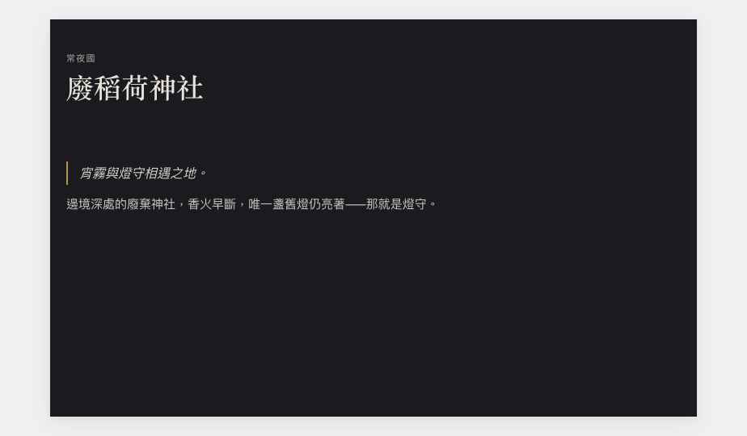

PB0 校正完成：補上 Theme → Variant → Override 三層、worldEntry 公開頁版型批次套用、模板升級衝突合併、Minimal Public Projection 與可見性分層。Builder 正式交接走獨立 Route。

模板 Block 用穩定 templateNodeKey + instanceNodeId；Member override 以 templateNodeKey 為目標、只存允許覆寫的 property，不複製整份模板。升級比較 舊版 / 新版 / Member Override，提供：保留我的自訂 · 套用新版設定 · 逐項解決衝突 · 新版移除 Block 後的 orphan override 處理 · Locked Block 不允許 override。
Minimal Public Projection：發布快照只含 Published Layout 用到的 Block、Block 真正綁定的欄位、權限裁切後的資料——不把完整 Character/Link/Project payload 丟到前端再隱藏。Asset 封存／來源改私密／頁面撤銷／企劃改私密時，即使有舊 Published Snapshot 也立即停止公開（安全撤銷閘）。可見性分層：Page Access（private/unlisted/public/members）vs Block Visibility（inherit/public/members/hidden）——「限連結」只屬 Page Access。有效公開＝ Page ∧ Block ∧ Binding ∧ Source Entity ∧ Asset 全通過。
Builder 顯示詳細錯誤＋重新綁定入口；Public Renderer 不顯示工程 path／ID／內部錯誤，改為隱藏 Block 或安全備援（已實作：非 builder 模式 broken/missing 回傳空，不洩漏），並在管理端通知擁有者修復。
| 檔案 | 變更 |
|---|---|
| assets/data.js | worldEntry 公開頁版型（暗色怪談 theme + locked blocks）＋3 個批次套用的條目頁；resolveBinding 補 worldEntry；新公開頁動作權限（rollback/pageOverride:update_own/pagePreview:view_draft/pageSlug/pageVisibility/pageTemplate:create-update-publish）。 |
| assets/pagerender.js | Renderer 安全備援（非 builder 不洩漏 broken 詳情）；text/heading variant（quote/note/scroll）＋繼承 theme 文字色。 |
| pages/portal.html | worldEntry 頁綁定該條目 name/summary/content；套用 Page Theme（bg/text/primary/maxWidth）。 |
PB0.1 完成，先停。回到 Participants／Permissions。
該輪先定義公開頁權限：publicPage:create/update/publish/rollback、pageTemplate:create/update/publish、pageOverride:update_own、pagePreview:view_draft、pageSlug:update、pageVisibility:update（grants 已就緒）。維持單一 OCData、Demo only。